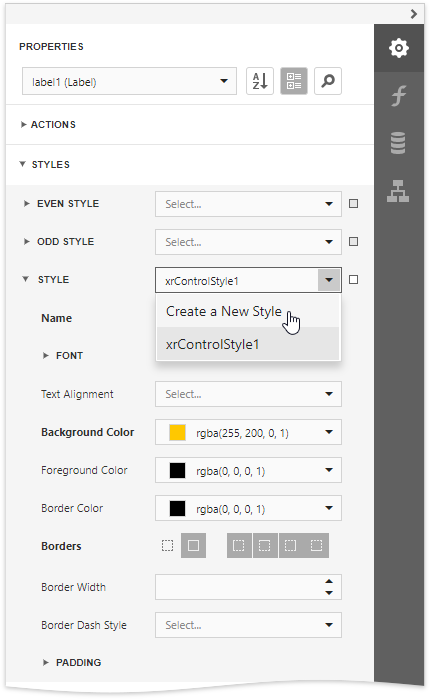
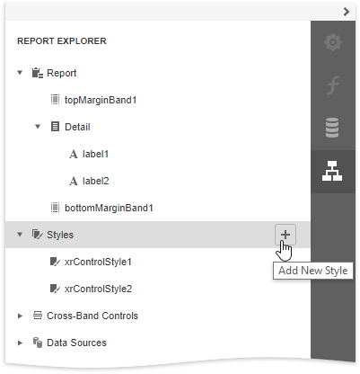
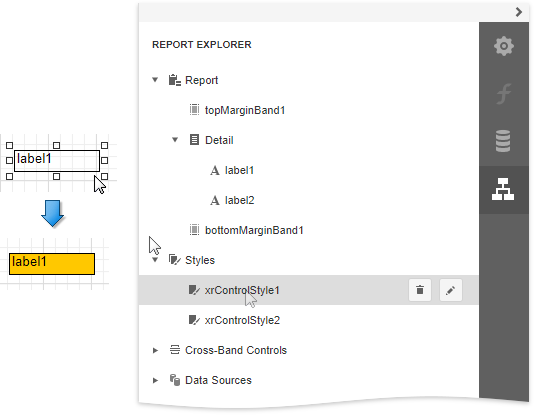
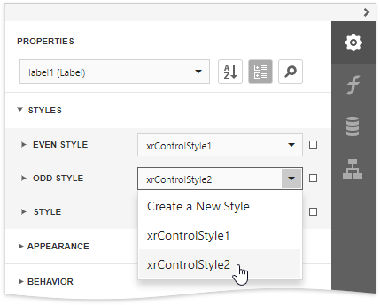
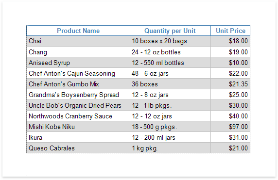
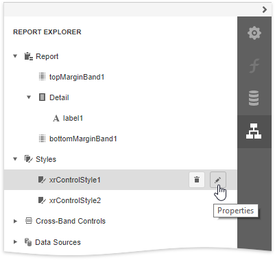
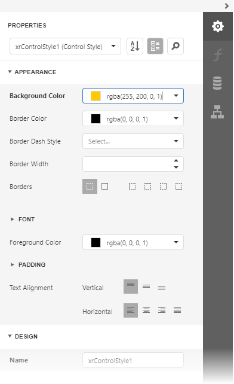

Report Visual Styles
This topic describes how to combine appearance properties into styles and apply them to report elements.
Create a Report Style
Use the following approaches to create a visual style in your report:
Use the Properties Panel
Expand the Properties panel's Styles category, click the drop-down list for the Style property and select Create a New Style.

Use the Report Explorer
Switch to the Report Explorer panel, select the Styles node and click the plus button
 to add a new report visual style.
to add a new report visual style.
To access the collection of added report visual styles, expand the Styles category in the Report Explorer.
Assign a Style to a Report Element
Drag a report style from the Report Explorer onto a report control. This assigns the style to the report element's Style property.

Assign Odd and Even Styles
You can use the Odd Style and Even Style properties to apply different styles to alternating rows in a report.


Customize a Style
Select a style and click the Properties  button in the Report Explorer.
button in the Report Explorer.

This opens the Properties panel where you can adjust the settings of the selected style. All the report elements apply the updated style immediately.

Style Inheritance
Nested elements inherit their parent element's style if they do not have an applied style.
Override Styles
You can specify a different value for a report element's appearance property to override the corresponding property value in the report element's style.
Note
If you apply conditional formatting, its appearance property values have a higher priority than both the individually specified properties and the style's properties.